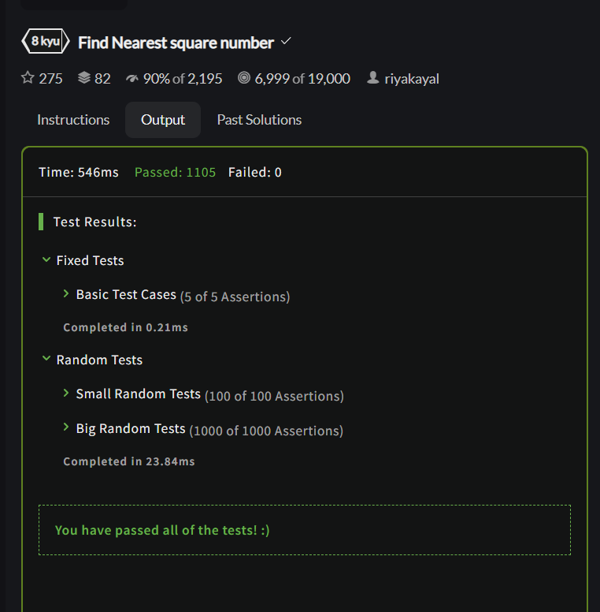

班级： 21计科3班
学号： 20210302310
姓名： 姚义香
Github地址：https://github.com/blmeue/Python_resources.git
CodeWars地址：https://www.codewars.com/users/blmeue
实验环境的安装
Python变量、简单数据类型和列表简介
完成教材《Python编程从入门到实践》下列章节的练习：
在Codewars网站注册账号，完成下列Kata挑战：
难度：8kyu
你的任务是找到一个正整数n的最近的平方数 例如，如果n=111，那么nearest_sq(n)（nearestSq(n)）等于121，因为111比100（10的平方）更接近121（11的平方）。 如果n已经是完全平方（例如n=144，n=81，等等），你需要直接返回n。 代码提交地址 https://www.codewars.com/kata/5a805d8cafa10f8b930005ba
难度：6kyu
一个孩子在一栋高楼的第N层玩球。这层楼离地面的高度h是已知的。他把球从窗口扔出去。球弹了起来, 例如:弹到其高度的三分之二（弹力为0.66）。他的母亲从离地面w米的窗户向外看,母亲会看到球在她的窗前经过多少次（包括球下落和反弹的时候）？
一个有效的实验必须满足三个条件：
如果以上三个条件都满足，返回一个正整数，否则返回-1。 注意:只有当反弹球的高度严格大于窗口参数时，才能看到球。 代码提交地址 https://www.codewars.com/kata/5544c7a5cb454edb3c000047/train/python
难度： 7kyu
返回给定字符串中元音的数量（计数）。对于这个Kata，我们将考虑a、e、i、o、u作为元音（但不包括y）。输入的字符串将只由小写字母和/或空格组成。
代码提交地址： https://www.codewars.com/kata/54ff3102c1bad923760001f3
难度：8kyu
创建一个函数接收一个整数作为参数，当整数为偶数时返回”Even”当整数位奇数时返回”Odd”。 代码提交地址： https://www.codewars.com/kata/53da3dbb4a5168369a0000fe
使用Mermaid绘制程序流程图
安装Mermaid的VSCode插件：
使用Markdown语法绘制你的程序绘制程序流程图（至少一个），Markdown代码如下：
显示效果如下：
flowchart LR
A[Start] --> B{Is it?}
B -->|Yes| C[OK]
C --> D[Rethink]
D --> B
B ---->|No| E[End]
查看Mermaid流程图语法-->点击这里
使用Markdown编辑器（例如VScode）编写本次实验的实验报告，包括实验过程与结果、实验考查和实验总结，并将其导出为 PDF格式 来提交。
请将实验过程与结果放在这里，包括：
练习2.1: 简单消息
(1) 实验代码：
message="hello world"
print(message)
（2）实验结果：
hello world
练习2.2：多条简单消息
(1) 实验代码：
message="hello world"
print(message)
message="how are you"
print(message)
(2) 实验结果：
hello world
how are you?
练习2.3：个性化消息
(1) 实验代码：
name="Eric"
message=f"Hello {name},would you like to learn some Python today?"
print(message)
(2) 实验结果：
Hello Eric,would you like to learn some Python today?
练习2.4：调整名字的大小写
(1) 实验代码：
name='eRic'
print(name.lower())
print(name.upper())
print(name.title())
(2) 实验结果：
eric
ERIC
Eric
练习2.5： 名言1
(1) 实验代码：
name="Albert Einstein"
saying = "A person who never made a mistake never tried anything new."
print(f"{name}: \"{saying }\" ")
(2) 实验结果：
Albert Einstein: "A person who never made a mistake never tried anything new."
练习2.6： 名言2
(1) 实验代码：
famous_person="Albert Einstein"
famous_saying = "A person who never made a mistake never tried anything new."
message=f"{famous_person}: \"{famous_saying }\" "
print(message)
(2) 实验结果：
Albert Einstein: "A person who never made a mistake never tried anything new."
练习2.7：删除人名中的空白
(1) 实验代码：
name="\t Eric \n "
print(name.lstrip())
print(name.rstrip())
print(name.strip())
(2) 实验结果：

练习2.8：文件扩展名
(1) 实验代码：
filename='python_notes.txt'
print(filename.removesuffix('.txt'))
(2) 实验结果：
python_notes
练习2.9：数字8
(1) 实验代码：
print(5+3)
print(10-2)
print(4*2)
print(16/2)
(2) 实验结果：
8
8
8
8.0
练习2.10：最喜欢的数
(1) 实验代码：
number=10
print(f"My favorite number is {number}")
(2) 实验结果：
My favorite number is 10
练习3.1：姓名
(1) 实验代码：
names=["Albert","Einstein","Marie","Curie","Tsung-Dao","Lee"]
for name in names:
print(name)
(2) 实验结果：
Albert
Einstein
Marie
Curie
Tsung-Dao
Lee
练习3.2：问候语
(1) 实验代码：
for name in names:
print(f"{name},how are you?")
(2) 实验结果：
Albert,how are you?
Einstein,how are you?
Marie,how are you?
Curie,how are you?
Tsung-Dao,how are you?
Lee,how are you?
练习3.3：自己的列表
(1) 实验代码：
ways=["Honda motorcycle","car"]
for way in ways:
print(f"I would like to own a {way}.")
(2) 实验结果：
I would like to own a Honda motorcycle.
I would like to own a car.
练习3.4：嘉宾名单
(1) 实验代码：
guests=["Albert","Einstein","Marie"]
for person in guests:
print(f"{person},please come to my dinner")
(2) 实验结果：
Albert,please come to my dinner
Einstein,please come to my dinner
Marie,please come to my dinner
练习3.5：修改嘉宾名单
(1) 实验代码：
cannot_attend="Albert"
guests=["Albert","Einstein","Marie"]
print(f"Sorry to hear that {cannot_attend} can not attend")
new_guest="Mary"
guests[guests.index(cannot_attend)]=new_guest
for guest in guests:
print(f"{guest},please come to my dinner")
(2) 实验结果：
Sorry to hear that Albert can not attend
Mary,please come to my dinner
Einstein,please come to my dinner
Marie,please come to my dinner
练习3.6：添加嘉宾名单
(1) 实验代码：
print("I found a bigger table")
guests=["Albert","Einstein","Marie"]
guests.insert(0,"Jane")#在列表开头添加元素
guests.insert(2,"Mary")#在列表中间添加元素
guests.append("Jack")#在列表末尾添加元素
for guest in guests:
print(f"{guest},please come to my dinner")
(2) 实验结果：
I found a bigger table
Jane,please come to my dinner
Albert,please come to my dinner
Mary,please come to my dinner
Einstein,please come to my dinner
Marie,please come to my dinner
Jack,please come to my dinner
练习3.7：缩短名单
(1) 实验代码：
print("Sorry!I can only invite two guests")
guests=["Jane","Albert","Mary","Einstein","Marie","Jack"]
while len(guests)>2:
print(f"Sorry {guests.pop()},I can not invite you")
for guest in guests:
print(f"Dear {guest}, You are still invited to my dinner!")
del guests[:]#删除列表里面所有的元素
print(guests)
(2) 实验结果：
Sorry!I can only invite two guests
Sorry Jack,I can not invite you
Sorry Marie,I can not invite you
Sorry Einstein,I can not invite you
Sorry Mary,I can not invite you
Dear Jane, You are still invited to my dinner!
Dear Albert, You are still invited to my dinner!
[]
练习3.8：放眼世界
(1) 实验代码：
cities=["Beijing","Shanghai","Guangzhou","Shenzhen","HongKong","Macao"]
print(cities)
print(sorted(cities))#使用sorted()按字母顺序打印这个列表
print(cities)
print(sorted(cities,reverse=True))#使用sorted()按字母顺序相反的顺序打印这个列表
print(cities)
cities.reverse()#修改列表元素的排列顺序,反转列表元素的排列顺序
print(cities)
cities.reverse()#再次修改列表元素的排列顺序。打印该列表，核实排列顺序又恢复到原来的排序列表
print(cities)
cities.sort()#修改该列表，使其元素按字母顺序排列
print(cities)
cities.sort(reverse=True)#修改该列表，使其元素按与字母顺序相反的顺序排列
print(cities)
(2) 实验结果：
['Beijing', 'Shanghai', 'Guangzhou', 'Shenzhen', 'HongKong', 'Macao']
['Beijing', 'Guangzhou', 'HongKong', 'Macao', 'Shanghai', 'Shenzhen']
['Beijing', 'Shanghai', 'Guangzhou', 'Shenzhen', 'HongKong', 'Macao']
['Shenzhen', 'Shanghai', 'Macao', 'HongKong', 'Guangzhou', 'Beijing']
['Beijing', 'Shanghai', 'Guangzhou', 'Shenzhen', 'HongKong', 'Macao']
['Macao', 'HongKong', 'Shenzhen', 'Guangzhou', 'Shanghai', 'Beijing']
['Beijing', 'Shanghai', 'Guangzhou', 'Shenzhen', 'HongKong', 'Macao']
['Beijing', 'Guangzhou', 'HongKong', 'Macao', 'Shanghai', 'Shenzhen']
['Shenzhen', 'Shanghai', 'Macao', 'HongKong', 'Guangzhou', 'Beijing']
练习3.9：晚餐嘉宾
(1) 实验代码：
guests=["Jane","Albert","Mary","Einstein","Marie","Jack"]#练习3.6邀请的嘉宾
print(f"You have invited {len(guests)} guests to have dinner")
(2) 实验结果：
You have invited 6 guests to have dinner
练习3.10：尝试使用各个函数
(1) 实验代码：
lists=["Mountains","Rivers","Country","City","Language","Love"]
print(f"The number of lists is {len(lists)}!")#队列长度
print(sorted(lists))#按照字母顺进行打印
print(sorted(lists,reverse=True))#使用sorted函数对列表按照字母顺序相反的顺序进行打印
lists.reverse()#利用reverse()函数反省打印列表
print(lists)
lists.sort()#sort()方法按字母升序排序
print(lists)
lists.sort(reverse=True)#sort(reverse=True)方法按字母降序排序
print(lists)
lists.remove("Love")#删除Love
print(lists)
lists.pop(2)#pop(i)删除位置i的元素
print(lists)
lists.pop()#删除列表末尾元素
print(lists)
del lists[1]#删除第二个元素
print(lists)
lists.append('Mountain')#在列表末尾添加元素
print(lists)
lists.insert(1,'Stars')#在列表任意位置插入元素
print(lists)
lists[1]='Animal'#修改列表元素
print(lists)
(2) 实验结果：
The number of lists is 6!
['City', 'Country', 'Language', 'Love', 'Mountains', 'Rivers']
['Rivers', 'Mountains', 'Love', 'Language', 'Country', 'City']
['Love', 'Language', 'City', 'Country', 'Rivers', 'Mountains']
['City', 'Country', 'Language', 'Love', 'Mountains', 'Rivers']
['Rivers', 'Mountains', 'Love', 'Language', 'Country', 'City']
['Rivers', 'Mountains', 'Language', 'Country', 'City']
['Rivers', 'Mountains', 'Country', 'City']
['Rivers', 'Mountains', 'Country']
['Rivers', 'Country']
['Rivers', 'Country', 'Mountain']
['Rivers', 'Stars', 'Country', 'Mountain']
['Rivers', 'Animal', 'Country', 'Mountain']
练习3.11：有意引发错误
(1) 实验代码：
my_list=[1,2,3,4,5]
#试图访问列表中第七个元素，这个将引发索引错误
#print(my_list[6])
#修改后
print(my_list[4])
(2) 实验结果：
5
第1题：求离整数n最近的平方数（Find Nearest square number）
(1) 实验代码:
def nearest_sq(n):
return round(n**0.5,0)**2
(2) 实验结果: 
第2题：弹跳的球（Bouncing Balls）
(1) 实验代码:
def bouncing_ball(h, bounce, window):
# your code
sum=1
see_h=bounce*h
if h>0 and (bounce>0 and bounce<1) and window <h:
while window<see_h:
sum +=2
see_h=see_h*bounce
return sum
return -1
(2) 实验结果:

第3题： 元音统计(Vowel Count)
(1)实验代码:
def get_count(sentence):
return sentence.count('a')+sentence.count('e')+sentence.count('i')+sentence.count('o')+sentence.count('u')
pass
(2)实验结果:

第4题：偶数或者奇数（Even or Odd）
(1) 实验代码:
def even_or_odd(number):
if number%2 ==0:
return "Even"
return "Odd"
(2) 实验结果:

flowchart TD
A[Number] --> B{是偶数?}
B -->|yes| C[Even]
B -->|no| D[Odd]
C --> E[End]
D --> E
请使用自己的语言并使用尽量简短代码示例回答下面的问题，这些问题将在实验检查时用于提问和答辩以及实际的操作。
在本次的实验过程中，我更加熟练的掌握了Python语言的语法，理解到更多的python函数，对python变量的操作更加熟练，也对Python语言的特性有了更深的理解。同时也更加熟悉Visual Studio Code的使用，能够熟练的进行代码的编写和调试。